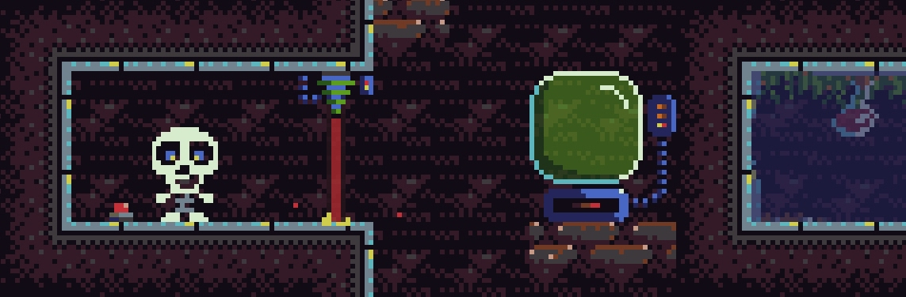
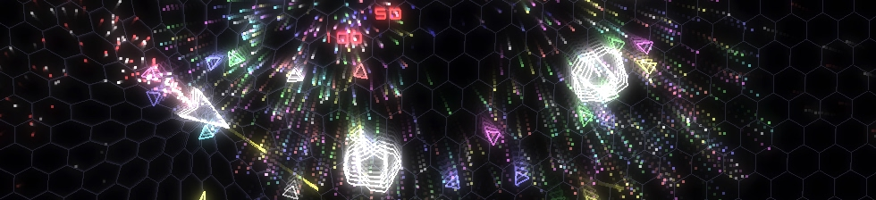

How to make games the hard way
I first started writing computer games a long time ago. In human terms obviously, I mean we're not talking epochs here. I don't want to date myself (although I'd make a terrific date), but back then pixel art was called 'computer graphics' and 3D graphics were known as 'Elite'.
If you wanted to make a game on any of the popular home computers of the age your language choices were pretty much Basic or assembler. Except that for most games Basic was too slow, so assembler it was. There were no frameworks, libraries or tools. Often there were only four colours, and one of them was black. Heck, half the time pixels weren't even square.
You learnt assembler from a manual, by studying type-in games in magazines and (a bit later) by reading the source code of public domain software sent through the post.
It was hard work but immensely satisfying. The code you wrote was your own, as were the bugs. When things finally worked there was a genuine sense of achievement.
Fast forward to 2014. To make a game today you have a plethora of choices regarding your target platform, the frameworks and libraries you use, languages and tools. You can throw together prototypes extremely quickly and for many tasks you don't even need to write much code.
Sounds great doesn't it? And it is for many people, especially those whose real passion leans more towards the design and artistic side.
Of course it also means the barrier of entry is lower. You can make a lower-quality game with almost no real technical skills at all and throw it up on an app store in a few days. Making a polished, interesting and well-designed game still requires a massive amount of skill and effort but that just means that the tools available allow us to create far more complex games than would previously have been possible.
So, given all of that, why in the wide, wide world of sports would someone (i.e. me) reject all of this and still be building games in low-level languages and shunning the higher level frameworks?
To answer that we need to examine why games development is so enticing in the first place. Making a game involves many different areas of creativeness. There's obviously programming, but more than that you need to tackle a swathe of different topics that you don't often get exposed to when building other things.
For example, the average 2D game will require graphics code (2D sprites), basic physics (movement, gravity), collision detection and response, spatial partitioning, UI design, input handling, audio interfaces, performance tuning and memory management and that's before you even get to the game logic.
If you're building it yourself there's also art creation, sound and music composition and level design.

So the act of creation itself can be hugely satisfying - plus the end product is something that people will (hopefully) enjoy! Now I'm not knocking the B2B websites and commerce platforms that I spend my daylight hours glueing together, but ... when was the last time you had someone tell you how much fun they had using that reporting tool you built for them?
Using a modern tool like Unity or GameMaker to build a 2D platformer gives you the game loop, level structures, sprite systems, animations, sound systems, effects, input, plus something that's increasingly important nowadays - cross-platform builds.
The problem for me is that it also taken away some of the fun of building the game. The low-level mechanics are what brought me to game development in the first place. It's how I use a project (almost used the word 'leverage' there - yikes) to learn new ways of approaching problems and sometimes completely different areas of expertise.
Increasingly I also find that for the kinds of games I'm making it's really not that much of an overhead to do it all myself anyway. Most of my time ends up in trying to design a decent game, not in the actual technical solutions.
For example, QB1-0 (an asteroidy space-shooter) has very basic mechanics. The graphics are essentially a bunch of OpenGL line and point draws, the physics is implemented using a basic position, velocity, force system and the sound ... well, let's not talk about the sound, ok?

I didn't build a 'framework' or an 'engine' to make that game. I just built the game. When I started my next game (Spooky Pooky), a platformer, I ripped out some of the QB1-0 code and hacked away at it to morph it into something more appropriate for that new game.
The code bases end up pretty lean and easy to understand and hack new features into because they don't contain anything that's not required by the game.
So far so good. I've convinced you of nothing and you're mentally listing all the reasons why I'm a fool and why aren't I just using Unity and what's for lunch anyway?
Let's step things up a bit. So I write my own code. Whilst eschewing all the fabulous and free help available to me I thought to myself, you know what Joeyspacerocks? This is too easy. For a real challenge why don't we ditch the last 30 years of language innovations and build the games in C? Who needs objects anyway?
Obviously it doesn't take a trained psychologist to spot that this is an extreme reaction against the shackles of a modern software engineer's day job, where you're up to your eyebrows in objects, frameworks and design patterns. Don't get me started about being responsible and, shudder, working-in-a-team.
I've always had a thing for C though. It gives you just enough help to make you think it's on your side before it stabs you in the back. It lends the intoxicating game of game development an edge that would otherwise be lacking.
Turns out, though, that C is pretty good for games where you want to keep a tight handle on memory management (i.e. avoid messing about with memory allocation during tight loops) and it's a brilliant way to avoid getting sucked into the whole whoops-I've-only-gone-and-built-an-entity-system-again problem.
What I'm trying to say is that it focuses the mind on the problem at hand and I find that I'm less likely to accidentally start building another engine I don't need because, well frankly it's just too much work in C.
I'm not really suggesting that you should make games from scratch in C. I do it because I'm self-indulgent and bloody-minded and frankly I can do what I like when I don't have the responsibility of working with a team of people.
What I'm edging towards is that sometimes it's interesting and mind-expanding to step outside the box and see what it's like to build things in a totally different way. It provides interesting perspectives and opens you up to all kinds of approaches and patterns of thought that you wouldn't encounter otherwise. Some of which will may prove useful when you've climbed back inside the box. If nothing else it really makes you appreciate why these tools do things the way they do, and what they're actually giving you.
Will it help you to ship a game? Um, well look at that, time's up.
Published on 03 Oct 2014